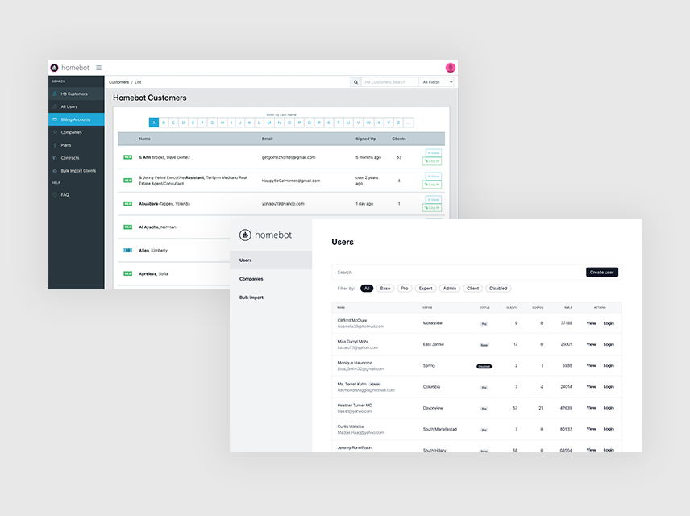
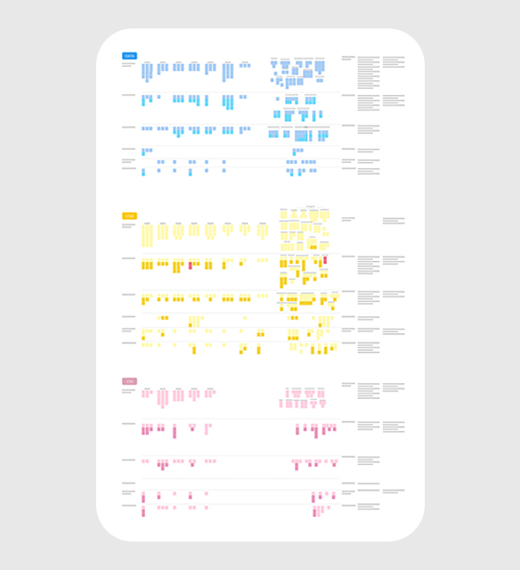
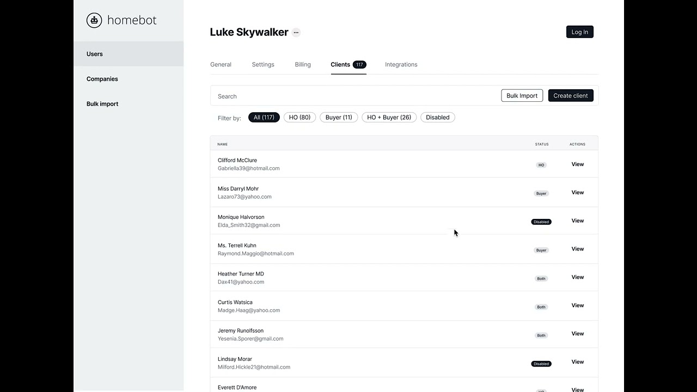

Context
Built in three days, used for three years
- A developer had used a CSS Bootstrap template to build an internal tool for managing customers and users. It was built in three days.
- Over the following three years, our internal team struggled with it and came to rely on workarounds.
Opportunity
A team working around its own tool
Early on at Homebot, I discovered that our internal team had developed a list of “workarounds” to use the admin tool effectively. We decided to fix the critical problems in the current tool while also designing a new version around the team’s key tasks, so they could work more efficiently and effectively.
Approach
Ask the whole team, then design for their key tasks
- Built rapport, then surveyed. After building rapport with key stakeholders across the org, I gathered feedback from every team leader and member. The survey captured all tasks from a team of 26: the three most important, the most time-consuming, and what they would fix first.
- Played it back. I synthesised the key tasks by group (Data, CSS, CSM) and sent them back to the team leaders to confirm they had been heard.
- Went deeper. I ran jobs-to-be-done style interviews to learn more about the tasks.
- Chose the stack together. With the tech leads on my team we selected Tailwind CSS, React and internal data for the new tool.
- Redesigned around tasks. I reorganised the information architecture and redesigned the UI with the key tasks in mind.
- Tested with the team. In usability tests with low- and high-fidelity prototypes, team members imagined doing their current tasks in the new tool. The interface and workflow were entirely different, yet they completed their tasks with no prompting.
- Shipped in small chunks. We built the new interface piece by piece and redirected from the old tool to the new one, so the team moved over naturally.


Outcome
≈80% less time on 20+ key tasks
- An ≈80% decrease in the time needed to complete 20+ key tasks.
- Workflows that used to take 15+ steps were redesigned to take 3.
- Significant improvements in efficiency, effectiveness and usability, which made for happier employees.
- Key stakeholders supported, and felt connected to, the work and the direction of the roadmap.
- Our product squad became enthusiastic about the project, because they could empathise with the challenges the internal team faced.

Watch the walkthrough